PSP
41 juegos, 0 probados en la bartop
Género
Jugadores
Década
41 juegos
 Ape Academy
Ape Academy Asterix & Obelix XXL 2: Mission Wifix
Asterix & Obelix XXL 2: Mission Wifix Astro Boy
Astro Boy BlazBlue: Calamity Trigger
BlazBlue: Calamity Trigger BlazBlue: Continuum Shift Extend
BlazBlue: Continuum Shift Extend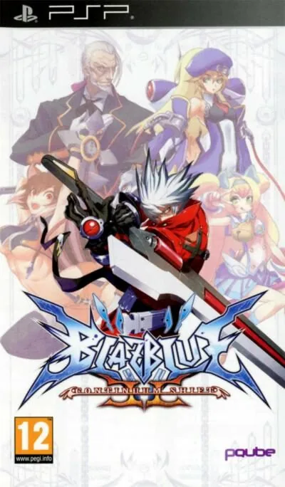
BlazBlue: Continuum Shift II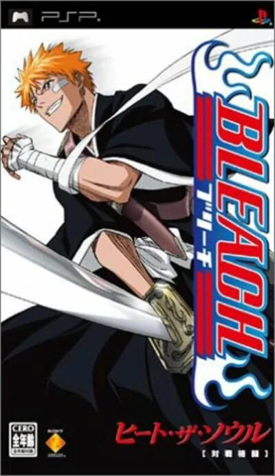
Bleach: Heat the Soul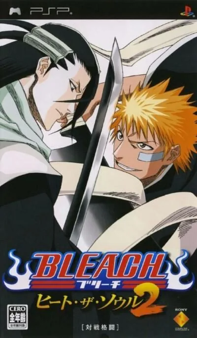
Bleach: Heat the Soul 2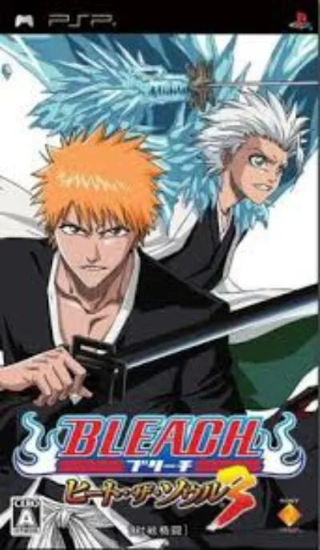
Bleach: Heat the Soul 3 Bleach: Heat the Soul 4
Bleach: Heat the Soul 4 Bleach: Heat the Soul 5
Bleach: Heat the Soul 5 Bleach: Heat the Soul 6
Bleach: Heat the Soul 6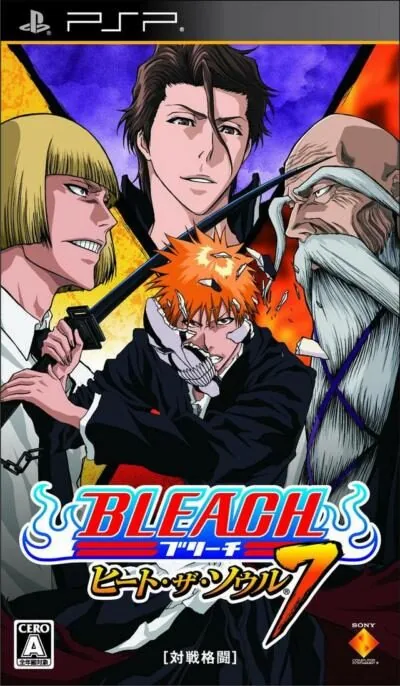
Bleach: Heat the Soul 7 Bubble Bobble Evolution
Bubble Bobble Evolution Castlevania The Dracula X Chronicles
Castlevania The Dracula X Chronicles CID: The Dummy
CID: The Dummy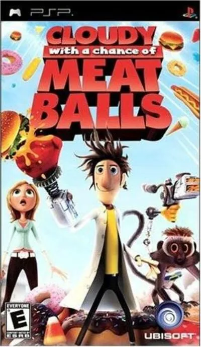
Cloudy with a Chance of Meatballs Crash Tag Team Racing
Crash Tag Team Racing Crush
Crush Darius Burst
Darius Burst Daxter
Daxter Death Jr.
Death Jr.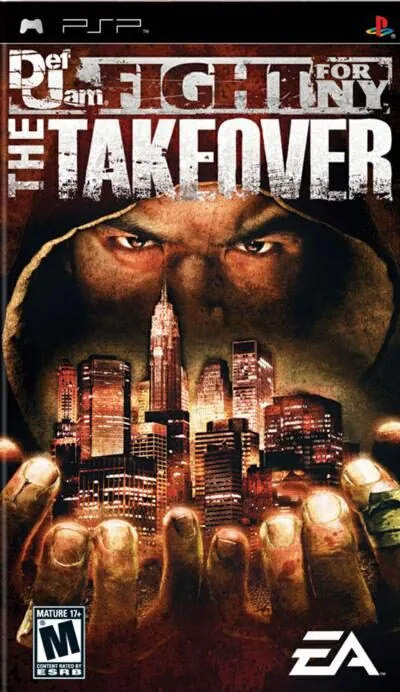
Def Jam: Fight for NY - The Takeover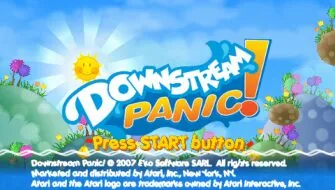
Downstream Panic! Dynasty Warriors: Strikeforce
Dynasty Warriors: Strikeforce Exit
Exit Exit 2
Exit 2 Kao Challengers
Kao Challengers Kingdom of Paradise
Kingdom of Paradise LEGO Indiana Jones 2: The Adventure Continues
LEGO Indiana Jones 2: The Adventure Continues LittleBigPlanet
LittleBigPlanet Lumines
Lumines Lumines II
Lumines II Mega Man Powered Up
Mega Man Powered Up Metal Slug XX
Metal Slug XX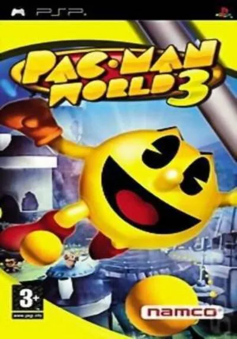
Pac-Man World 3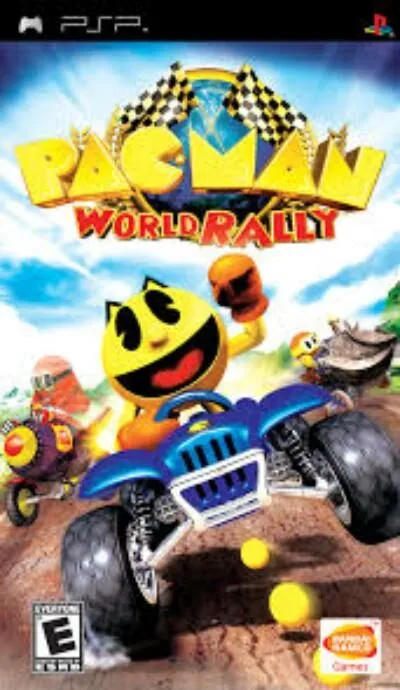
Pac-Man World Rally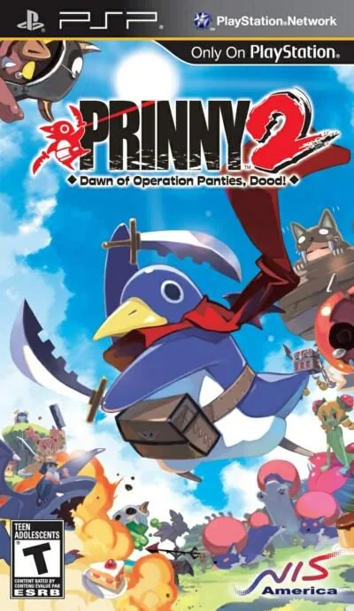
Prinny 2: Dawn of Operation Panties, Dood! Prinny: Can I Really Be the Hero?
Prinny: Can I Really Be the Hero? Space Invaders Extreme
Space Invaders Extreme Spectral vs Generation
Spectral vs Generation
No hay juegos con esos filtros.